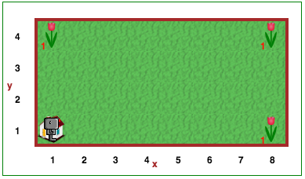
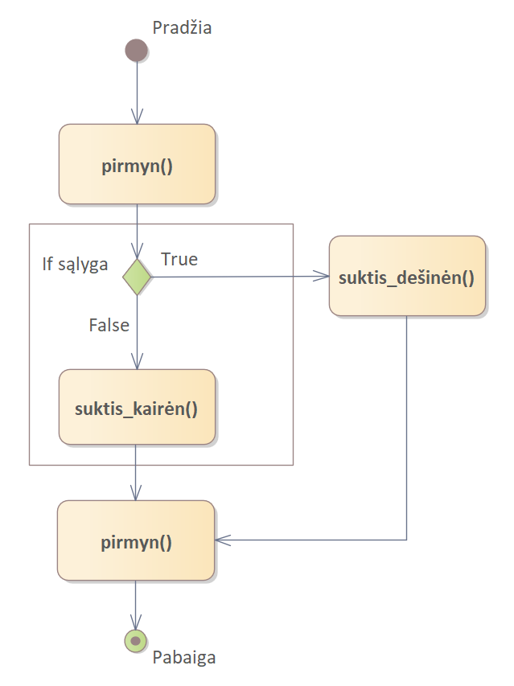

Nors mokytis programuoti smagu, nereikėtų visą laiką praleisti prie kompiuterio. Būnant namuose, jei
lyja, toliau skaitykite, kitu atveju eikite į lauką žaisti!
Perrašykime sakinį, prasidedantį jei, iš naujo:
jei lyja,
skaityk toliau,
kitu atveju,
eik į lauką žaisti
Jei tai būtų Pitonas, kuris nesupranta lietuvių kalbos, reiktų užrašyti taip:
if lyja():
skaityk_toliau()
else:,
eik_į_lauką_žaisti()
Taip, Pitonas suteikia daugiau nei vieno pasirinkimo galimybę, naudodamas raktažodį else. Pasinaudosime juo kitame pavyzdyje. Robotukas gali pamatyti, ar priešais jį yra siena, naudodamas funkciją priekyje_laisva(). Ją galima naudoti kartu su if/else ir parašyti programą, kuri vedžiotų Robotuką po stačiakampį pasaulį. Nepilnai suprogramuota programa pateikta toliau:
def eiti_arba_suktis():
if priekyje_laisva():
# atlikti veiksmus
else:
# atlikti kitokius veiksmus
repeat 40:
eiti_arba_suktis()
Atidaryk Robotuko pasaulio 11 lygį.
Robotukas nori padaryti gėlių puokštes savo draugams Sofijai ir Andriui. Robotukui kaimynai leido paimti() tulpes iš savo kiemų. Robotuko nelaimei, kiekvienas kiemas yra skirtingas. Robotukas žino, kad kiekvienas kiemas bus stačiakampis, kiemą apeiti reikės 23 žingsnių, o kiekviename kiemo kampe bus po tulpę.
Sukurkite programą, kuri vedžiotų Robotuką po kiemo perimetrą ir rinktų tuples (jei gali, paimtų tulpę, o jei negali, eitų į priekį). Jūs privalote naudoti repeat 23: ir if/else.
Dėmesio
Šiame žingsnyje pasaulis bus skirtingas kiekvieną kartą, kai pradėsite vykdyti programą. Kiekvieną kartą paleidus kodą, bus nustatomi nauji pasaulio matmenys. Pradinė vieta visada bus apatiniame kairiajame pasaulio kampe.
Matėme, kad def ir if sakiniai gali būti laikomi (kartais) lygiaverčiais kodų bloko įterpimui; išimtis buvo tada, kai if sakinio sąlyga buvo False, tokiu atveju ignoruodavome kodų bloką, o tai prilygsta jo pašalinimui. if/else sakinius galima laikyti vieno ar kito kodo bloko įterpimu. Taigi
pirmyn()
if True:
suktis_dešinėn()
else:
suktis_kairėn()
pirmyn()
yra tas pats, kas
pirmyn() suktis_dešinėn() pirmyn()
tuo tarpu kai
pirmyn()
if False:
suktis_dešinėn()
else:
suktis_kairėn()
pirmyn()
yra tas pats, kas
pirmyn() suktis_kairėn() pirmyn()
Tai iliustruoja ši diagrama:
